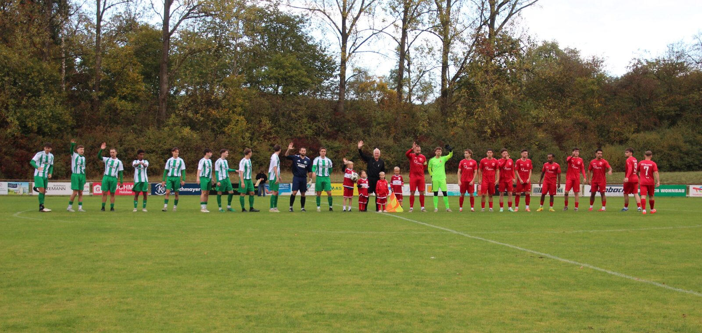
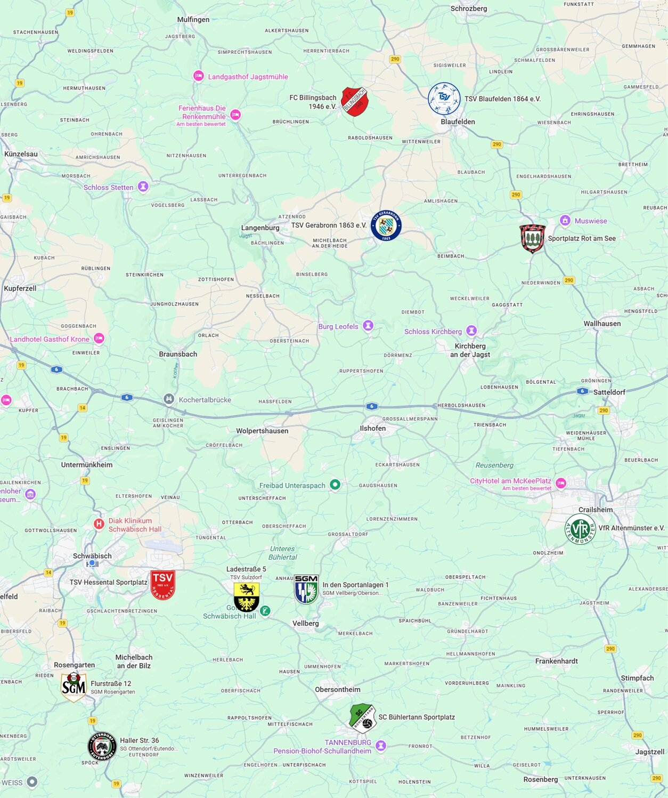

Nach dem achten Spieltag der Haller Staffel der Kreisliga A3 ist es nun amtlich: Die erste Mannschaft des TSV Hessental muss zusammen mit allen Teams bis einschließlich zum vierten Tabellenplatz (aktuell SGM Rosengarten) in die Abstiegsrunde mit den fünf letztplatzierten Mannschaften der Crailsheimer A3-Staffel. Das 5:5-Spektakel gegen den SV Tüngental hat leider die letzten Hoffnungen auf eine Aufholjagd begraben. In der Abstiegsrunde steigen von elf Mannschaften mindestens sieben (!) direkt ab. Diese Zahl kann sich im Falle weiterer Bezirksliga-Absteiger, die regional der A3 zugeordnet wären, sogar noch erhöhen.


Die Ergebnisse der abgeschlossenen Qualifikationsrunde im Überblick:
TSV Hessental – SC Bühlertann 1:1
Nach einer schwachen ersten Halbzeit glich Tim Di Mattia per Volley nach Vorlage von Roman Otto aus (62.). In der 75. Minute wurde Yannik Frey im Strafraum gefoult, doch beim fälligen Strafstoß scheiterte Marco Fischer am Gästekeeper.
Spfr Bühlerzell – TSV Hessental 4:1
Den zwischenzeitlichen Ausgleich erzielte Tim Di Mattia nach einem Eckball von Yannik Frey (35.). Nach zwei Platzverweisen gegen Luca Schor und Oliver Köhler beendete Hessental die Partie zu neunt.
TSV Hessental – SGM Rosengarten 2:2
In einem temporeichen und hitzigen Duell trennten sich zwei Konkurrenten im Rennen um die Aufstiegsrunde mit einem Unentschieden. In der 21. Minute stieg Janne Lorenzen nach einem langen Eckball von Roman Otto am höchsten und traf per Kopf zur Hessentaler Führung. Nach der Pause erhöhte Tim Di Mattia, ebenfalls per Kopf, auf 2:0 (46.), was aber nicht zum Sieg reichte. Auch dieses Spiel beendete Hessental nach einem Platzverweis gegen Lukas Bubeck nur zu zehnt. Die Gäste kamen in der Nachspielzeit noch zum Ausgleich.
TSV Michelfeld – TSV Hessental 7:0
In Michelfeld kam Hessental deutlich unter die Räder.
TSV Hessental – SC Steinbach-Comburg 0:3
Die Gäste gewannen das Derby am Ende verdient gegen harmlose Hessentaler.
SGM Vellberg/Obersontheim II – TSV Hessental 2:4
Nach der Führung der Gastgeber kam Hessental durch ein Eigentor zum 1:1-Ausgleich (38.). Nach erneutem Rückstand staubte Dennis Schuller kurz vor dem Halbzeitpfiff zum 2:2 ab (45.). Nach der Pause brachte Steffen Schweikert seine Farben erstmals in Führung (48.), und Tim Di Mattia erhöhte per Handelfmeter auf 2:4 (69.).
TSV Hessental – TSV Sulzdorf 1:0
Den goldenen und einzigen Treffer des Tages erzielte Steffen Schweikert in der 70. Minute nach starker Vorarbeit von Kapitän Yannik Frey. Er sicherte damit den Derbysieg und nährte die Hoffnungen auf die Aufstiegsrunde. Zuvor war Tim Di Mattia in der 41. Minute per Foulelfmeter am Gästetorwart gescheitert.
TSV Hessental – SV Tüngental 5:5
Die Gäste aus Tüngental gingen fünfmal in Führung, und Hessental fand jedes Mal eine Antwort – das Unentschieden bedeutete aber schon vor dem letzten Spieltag den Gang in die Abstiegsrunde. Nur drei Minuten nach der Gästeführung glich Tim Di Mattia nach Vorlage von Mathis Kritsch zum 1:1 aus (13.). Tüngental ging in der 45. Minute erneut in Führung, doch direkt nach dem Wiederanpfiff glich Dino Ventura in der Nachspielzeit der ersten Halbzeit nach Hereingabe von Yannik Frey zum 2:2 aus (45.+3). Tüngental legte nach der Pause zum 3:2 vor, ehe Ventura nur vier Minuten später mit seinem zweiten Treffer das 3:3 herstellte. In der 78. Minute führte wieder Tüngental. Doch auch diesmal antworteten die Gastgeber: Oliver Köhler köpfte in der 84. Minute nach Yannik Freys bereits dritter Vorlage zum 4:4 ein. Die Schlussphase hielt noch zwei weitere Treffer bereit. Tüngental ging in der 90. Minute mit 5:4 in Führung. Als alles auf einen Auswärtssieg hindeutete, wurde Ventura im Strafraum zu Fall gebracht. Köhler verwandelte den Foulelfmeter in der 95. Minute zum 5:5 – das zehnte Tor dieser Partie.
SG Eutendorf/Ottendorf – TSV Hessental 6:4
Am letzten Spieltag der Haller A3-Runde gab es bei der SG Eutendorf/Ottendorf die nächsten zehn Tore. Vor dem Spiel waren beide Mannschaften schon für die Abstiegsrunde qualifiziert. Mathis Kritsch brachte die Gäste mit 1:0 in Führung, Dino Ventura erhöhte per Kopf nach einer Ecke von Johannes Said auf 2:0. Die Gastgeber verkürzten (35.), doch Johannes Said stellte nach Querpass von Mathis Kritsch den alten Zwei-Tore-Abstand wieder her (42.). Nach der Pause kamen die Gastgeber wieder zum Anschluss, und nach einer Gelb-Roten Karte gegen Dominik Holub (67.) war Hessental nur noch zu zehnt. Luca Schor köpfte nach Freistoß von Tim Di Mattia das 4:2 (81.). Doch Eutendorf drehte das Spiel noch zum 6:4.
So muss man nun als Tabellenachter mit 9 Punkten aus 9 Spielen und einem Torverhältnis von 18:30 den Gang in die Abstiegsrunde antreten. Mit nun zwei spielfreien Wochen gilt es, die chaotische Hinrunde aufzuarbeiten und sich auf die bevorstehende Aufgabe vorzubereiten.
So geht es weiter
In der Abstiegsrunde werden Eutendorf/Ottendorf, Rosengarten, Sulzdorf, Hessental, Vellberg/Obersontheim II und Bühlertann versuchen müssen, die Klasse noch zu halten. Aus der Crailsheimer Staffel muss Rot am See als Sechster in die Abstiegsrunde, zusammen mit dem VfR Altenmünster, dem TSV Gerabronn, dem FC Billingsbach und dem TSV Blaufelden.


Alle A3-Teams haben nun zwei Wochenenden Pause, bevor die Meister- und die Abstiegsrunde am 8. November beginnen. Dort starten alle Mannschaften quasi wieder bei null, weil es keine Punktemitnahme aus der Vorrunde gibt. Der Sieger der neun Teams umfassenden Meisterrunde steigt in die Bezirksliga auf, der Zweite darf in die Relegation. In der Abstiegsrunde sind elf Mannschaften versammelt, von denen mindestens sieben direkt absteigen. Je nach Anzahl der Hohenloher Absteiger aus der Bezirksliga Rems/Murr/Hall könnte sich die Zahl der direkten Absteiger in der A3 aber auch noch erhöhen. Die Mannschaft über dem Strich muss in die Abstiegsrelegation.
Die zweite Mannschaft in der Kreisliga B6
Die zweite Mannschaft konnte in ihrer zweiten Saison in der Kreisliga B6 bereits reichlich punkten. Das Team, das derzeit von Endrit Memeti und Lars Anskinewitsch betreut wird, steht nach acht Spielen mit zehn Punkten auf Tabellenplatz acht.
Im Auftaktspiel bezwang man den SC Bibersfeld im Derby mit 3:0. Die Tore erzielten Umut Ungan, Dicky-Son Lunzama und Julian Schneider. Eine Woche später konnte die Zweite einen Punkt aus Braunsbach entführen: Nik Sotnikow verkürzte zwischenzeitlich auf 2:1 (57.). Nach erneuter Zwei-Tore-Führung der Gastgeber brachte Ardian Sherifi seine Farben vom Punkt noch einmal heran (74.), und Endrit Memeti setzte mit dem 3:3-Ausgleich den Schlusspunkt (88.). Beim nächsten Auswärtsspiel in Bühlerzell glich Mohammed Sadeq Sultani die Führung der Gastgeber aus. Fünf Zeigerumdrehungen später brachte Rico Fuchs Hessental in Führung, die Bühlerzell später aber noch egalisierte.
Im Derby gegen die Zweite des SC Steinbach-Comburg brachte Endrit Memeti Hessental früh per Kopfball in Führung (7.). Steinbach drehte das Spiel, doch Mohammed Sadeq Sultani glich zum 2:2 aus (64.). Die erneute Steinbacher Führung hielt nicht lange: Ardian Sherifi traf in der 90. Minute vom Punkt zum Ausgleich, und Thomas Fertig erzielte in der Nachspielzeit den umjubelten Siegtreffer zum Derbysieg.
Danach unterlag man beim Titelanwärter SSV Schwäbisch Hall II mit 1:6, den einzigen Treffer für den TSV erzielte Daniel Fedoruk. Eine Woche später punktete die zweite Mannschaft wieder: Gegen den TSV Michelfeld II traf Ardian Sherifi zunächst in der zweiten Minute per Handelfmeter und später zum 2:2-Endstand (72.). Danach musste sich die Zweite in Gailenkirchen deutlich mit 1:7 geschlagen geben. Den Hessentaler Ehrentreffer erzielte Ardian Sherifi per Elfmeter.
Zuletzt gab die zweite Mannschaft in letzter Minute noch den Heimsieg aus der Hand: Umut Ungan erzielte die Führung für die Hausherren (54.), doch der TuRa Untermünkheim II gelang in der zweiten Minute der Nachspielzeit noch der Ausgleich zum 1:1.
Spielplan, Tabelle und Kader gibt es auf den Seiten unserer 1. Mannschaft und 2. Mannschaft.